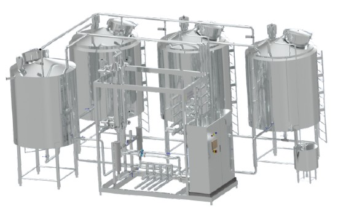
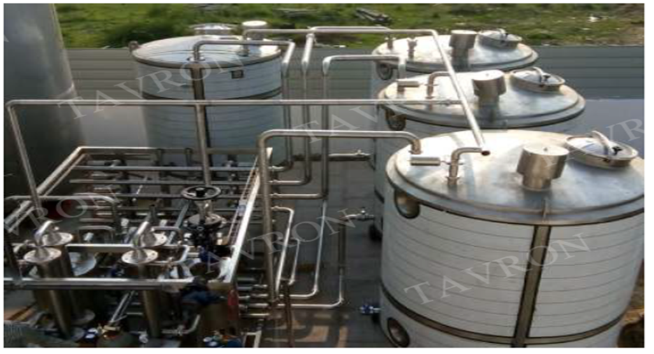
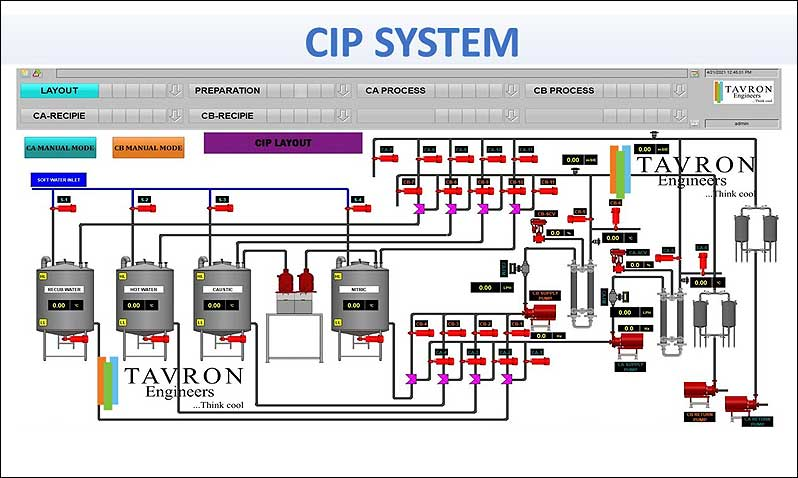

CIP System
- Food and Dairy Production is unimaginable without “Cleaning in Place” systems.
- CIP means the automatic cleaning of production plants – without them having to be disassembled or substantial changes being made compared to their production state.
- Hygiene and production safety are the basis for success in Food and Dairy Industries.
- TAVRON CIP Systems fulfils these requirements.
- TAVRON CIP Systems can be equipped with one to four (or more) tanks – pre-rinse water tank, caustic tank, acid tank and/or Hot water tank
- To this is added the number of desired CIP loops, i. e. the number of cleaning processes running at the same time.
- The modular design allows our CIP Systems to be easily customized and expanded.
- The CIP modules are completely pre-assembled and due to their compact dimensions are easily transported. The required tanks are assembled on site next to the CIP modules and connected with the prepared piping.
- Skid mounted Module unit.
- With Pneumatic Butterfly Valve and Pneumatic Seat Valve.
- Tanks with SS 316 inner and SS 304 outer.
- Single Circuit and Multiple Circuit.
- PLC with HMI for ease of operation ( optional with SCADA )
- Flow meter, Conductivity meter for controlling the parameters.
- Standard flow sequence or Customised flow sequence.
- The TAVRON CIP System is controlled by a operator panel. The PLC cabinet is attached to CIP Skid.
- The Siemens S7 PLC Controller or Delta AS Series PLC Controllers are used as per the customer requirement.

Technical Data
-
Typical output for One CIP Supply Centrifugal Pump:
- 20,000 l/h at 4 bar pressure, 5.5 KW or
- 30,000 l/h at 5 bar pressure, 7.5 KW or
- 40,000 l/h at 5 bar pressure, 11 KW
- (A flow rate of at least 1.5 m/s is recommended for pipe cleaning)
- TYPICAL TEMPERATURES CAUSTIC (NaOH): 70–90 °C
- TYPICAL TEMPERATURES ACID (HNO3): 0–70 °C
- DISINFECTION: Cold or Warm

Advantages
- Optimized Cleaning Times.
- Minimized Down Times.
- Highly Efficient Cleaning.
- Lower Personnel Costs Compared To Manual Cleaning.
- Reduction In Material Costs Due To Controlled Use Of Chemicals Etc.
- Compliance With And Monitoring Of Required Cleaning Parameters (Flow- Rate, Concentration And Temperature).
- Operator User-friendly HMI Design for Ease of Operation.
